Simulation assets/2025.09 ~ 2026.10
Real tools, rebuilt for Isaac Lab실물 도구를 Isaac Lab으로Broom, dustpan, broom supporter and cans빗자루, 쓰레받기, 서포터, 캔
Objects in simulation have to match the real ones for a policy to transfer. For the sweeping task (UR 2026) and Pick-and-Place (TMAD), appearance follows photos of the real objects, and collision uses separate colliders.Policy가 실물로 넘어가려면 Simulation의 물체가 실물과 맞아야 함. Sweeping(UR 2026)과 Pick-and-Place(TMAD)에서 겉모습은 실물 사진 기준, 충돌은 별도 Collider로 구성
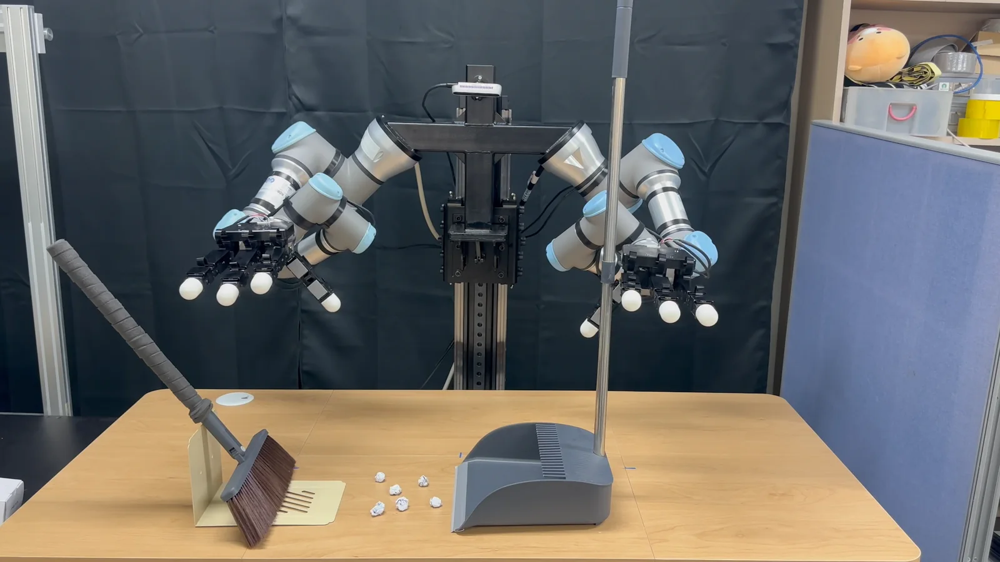
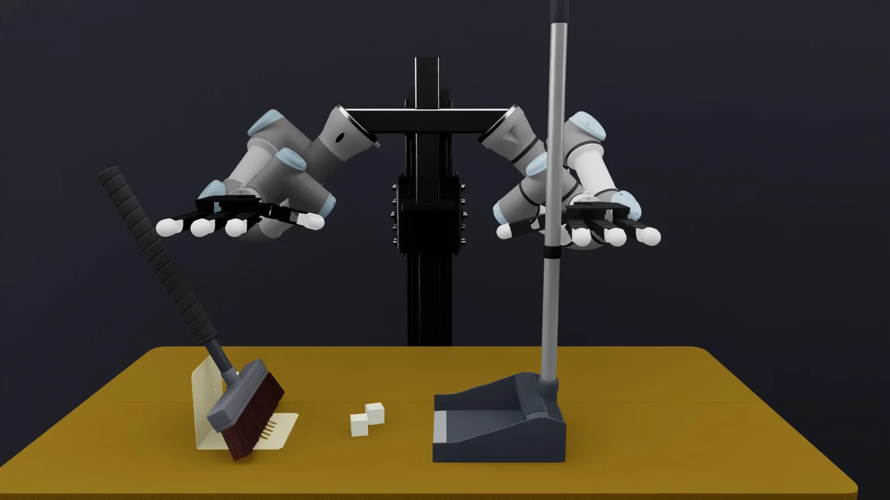
The sweeping setup on the real robot (left) and in Isaac Lab (right).실물(왼쪽)과 Isaac Lab(오른쪽)의 쓸기 장면
01
Four assets네 가지 자산
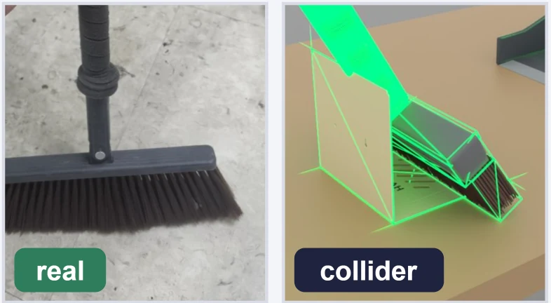
Broom빗자루 own CAD
Modeled in Fusion (2025.11). Three convex hulls; the bristles are approximated as a rigid body. Bristle-table and bristle-dustpan collisions are excluded.Fusion으로 직접 CAD 모델링(2025.11). Convex hull 3개, 솔은 Rigid body로 근사. 솔과 책상, 쓰레받기 충돌 제외
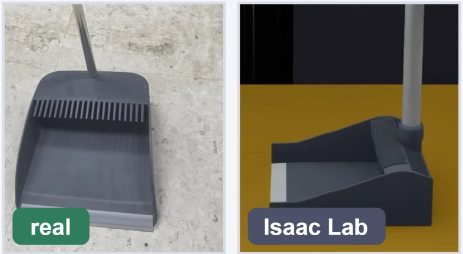
Dustpan쓰레받기 public mesh
Public mesh edited in Blender and set up as USD, resized to the lab dustpan (21 cm wide), with a convex decomposition collider.공개 Mesh를 Blender에서 편집해 USD로 구성. 실험실 쓰레받기 크기(폭 21 cm)로 다시 맞추고 Convex decomposition Collider 적용
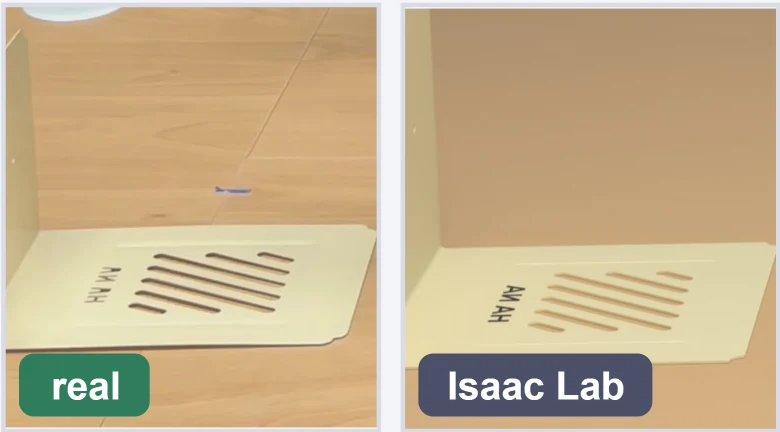
Broom supporter빗자루 서포터 own CAD
L-shaped stand modeled in Fusion (2025.12). Fixed as a kinematic body to hold the broom upright at the start.Fusion으로 L자 거치대 모델링(2025.12). Kinematic body로 고정해 빗자루를 세워 두는 시작 자세에 사용
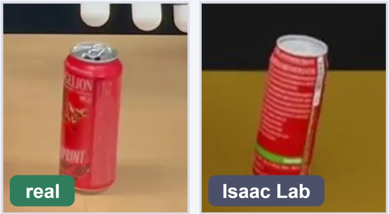
Can캔 public mesh + label
Real label textures on the UV of a public mesh, in red and green, scaled per axis to the real can.공개 Mesh의 UV에 실물 라벨 텍스처를 빨강, 초록 두 벌로 입힘. 실물 캔의 지름과 높이에 맞춰 축별 Scale 조정
02
Visual mesh and colliderVisual mesh와 Collider
The mesh the camera renders comes from the real object. The shape the physics engine uses for contact is a separate, simpler collider.카메라가 렌더링하는 Mesh는 실물 기준, 물리 엔진이 접촉에 쓰는 형상은 별도의 단순한 Collider
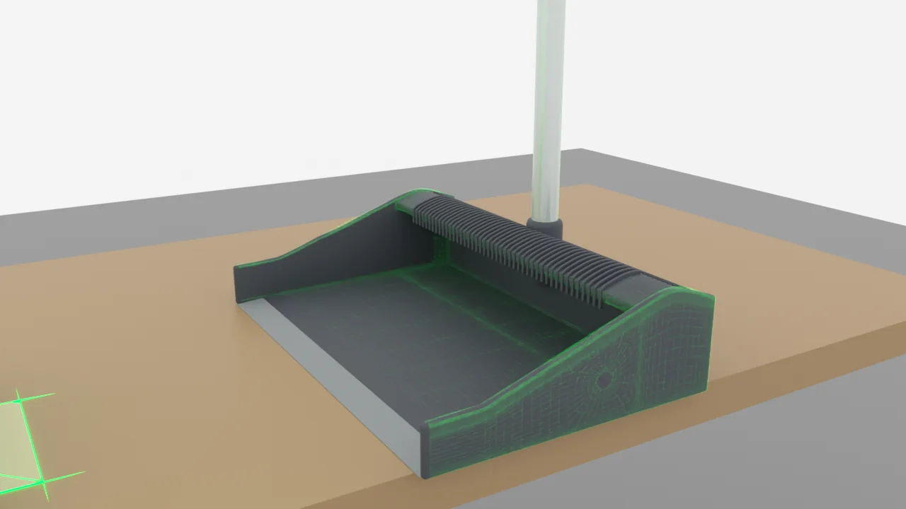
Dustpan쓰레받기
Convex decomposition collider (green) over the visual mesh.Visual mesh 위의 Convex decomposition Collider(초록)
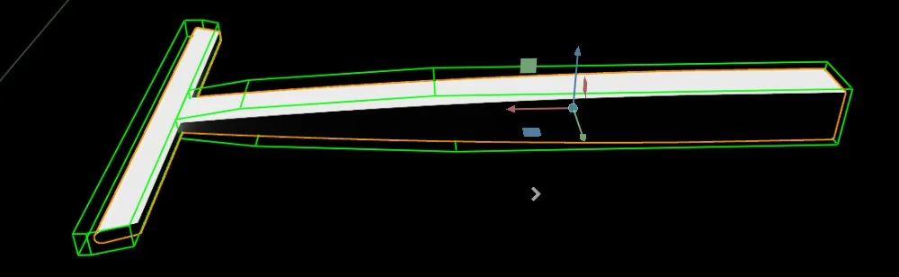
Broom빗자루
Three convex hulls; the bristles are one rigid body.Convex hull 3개, 솔은 하나의 Rigid body
03
In the simulatorSimulator 안에서
The sweeping scene in Isaac Lab with the lab-size dustpan, run by a scripted demonstration.실험실 크기 쓰레받기를 넣은 Isaac Lab 쓸기 장면, Scripted demonstration으로 실행
04
Photogrammetry 3D reconstructionPhotogrammetry 3D 복원
For another lab project, I photographed real objects, reconstructed them with Meshroom, cleaned them up in MeshLab and Blender, and converted them to OBJ and USD for pose estimation and simulation.연구실의 다른 과제에서 자세 추정과 Simulation에 쓸 실물 물체 Mesh가 필요해 직접 촬영 후 Meshroom으로 복원하고, MeshLab과 Blender로 정리해 OBJ와 USD로 변환
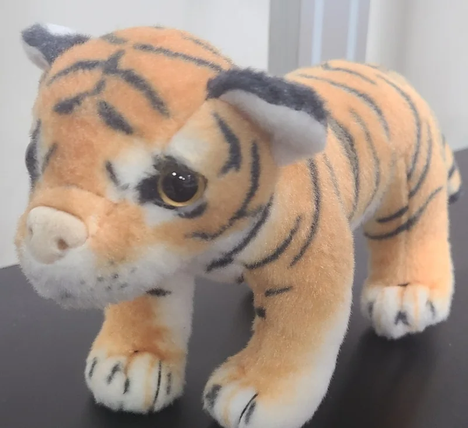
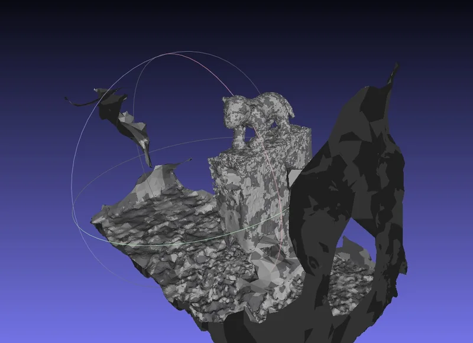
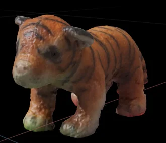
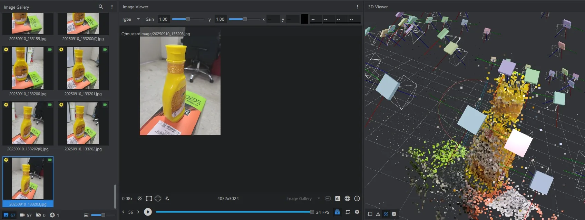
Meshroom, 57 photos of a sauce bottle. Lab project, 2025.09 to 10.Meshroom, 소스 병 사진 57장. 연구실 과제, 2025.09 ~ 10